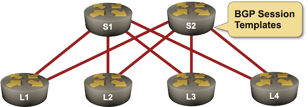

BGP Session Templates
In the Use BGP Route Reflectors exercise, you had to configure numerous IBGP neighbors on BGP route servers. All the neighbor configurations were identical; you had to:
- Specify the source interface for the IBGP session;
- Set the remote AS number to be equal to the local AS number;
- Configure the neighbor as a route reflector client.
Wouldn’t it be great if you could configure all those parameters in another configuration object and then apply them to the IBGP neighbors? Most BGP implementations have something along those lines and call that feature BGP groups, BGP peer groups, or BGP session templates. That’s what you’ll practice in this lab exercise.

Existing BGP Configuration
All routers in your lab are in AS 65000. The spine routers (S1 and S2) are route reflectors; the leaf routers (L1 and L2) advertise one IPv4 prefix each.
| Node/ASN | Router ID | BGP RR | Advertised prefixes |
|---|---|---|---|
| AS65000 | |||
| l1 | 10.0.0.3 | 10.0.0.3/32 | |
| l2 | 10.0.0.4 | 10.0.0.4/32 | |
| s1 | 10.0.0.1 | ✅ | |
| s2 | 10.0.0.2 | ✅ |
The routers in your lab have these IBGP neighbors:
| Node | Neighbor | Neighbor AS | Neighbor IPv4 |
|---|---|---|---|
| l1 | s1 | 65000 | 10.0.0.1 |
| s2 | 65000 | 10.0.0.2 | |
| l2 | s1 | 65000 | 10.0.0.1 |
| s2 | 65000 | 10.0.0.2 | |
| s1 | s2 | 65000 | 10.0.0.2 |
| l1 | 65000 | 10.0.0.3 | |
| l2 | 65000 | 10.0.0.4 | |
| s2 | s1 | 65000 | 10.0.0.1 |
| l1 | 65000 | 10.0.0.3 | |
| l2 | 65000 | 10.0.0.4 |
All four routers are running OSPF in area 0:
| Router | Interface | IPv4 Address | Neighbor(s) |
|---|---|---|---|
| l1 | Loopback | 10.0.0.3/32 | |
| swp1 | 10.1.0.1/30 | s1 | |
| swp2 | 10.1.0.5/30 | s2 | |
| l2 | Loopback | 10.0.0.4/32 | |
| swp1 | 10.1.0.9/30 | s1 | |
| swp2 | 10.1.0.13/30 | s2 | |
| s1 | Loopback | 10.0.0.1/32 | |
| Ethernet1 | 10.1.0.2/30 | l1 | |
| Ethernet2 | 10.1.0.10/30 | l2 | |
| s2 | Loopback | 10.0.0.2/32 | |
| Ethernet1 | 10.1.0.6/30 | l1 | |
| Ethernet2 | 10.1.0.14/30 | l2 |
When starting the lab, netlab configures IP addresses, OSPF, BGP, IBGP neighbors, and the advertised prefixes. If you’re using another lab infrastructure, you’ll have to configure all that manually.
Start the Lab
Assuming you already set up your lab infrastructure:
- Change directory to
session/6-templates - Execute netlab up (device requirements, other options)
- Log into the lab routers with netlab connect and verify that the IP addresses, OSPF routing, and the IBGP sessions are properly configured.
The Problem
Log into one of the spine routers and check its BGP configuration. You’ll notice that it has the same set of parameters specified on most IBGP sessions. For example, this is the configuration you would get on Arista EOS:
router bgp 65000
router-id 10.0.0.1
no bgp default ipv4-unicast
bgp cluster-id 10.0.0.1
bgp advertise-inactive
neighbor 10.0.0.2 remote-as 65000
neighbor 10.0.0.2 update-source Loopback0
neighbor 10.0.0.2 description s2
neighbor 10.0.0.2 send-community standard extended
neighbor 10.0.0.3 remote-as 65000
neighbor 10.0.0.3 update-source Loopback0
neighbor 10.0.0.3 description l1
neighbor 10.0.0.3 route-reflector-client
neighbor 10.0.0.3 send-community standard extended
neighbor 10.0.0.4 remote-as 65000
neighbor 10.0.0.4 update-source Loopback0
neighbor 10.0.0.4 description l2
neighbor 10.0.0.4 route-reflector-client
neighbor 10.0.0.4 send-community standard extended
Configuration Tasks
Most BGP implementations can group BGP neighbor parameters into groups, peer groups, or templates that can then be applied en-masse to the BGP neighbors. Define two session templates on S1 and S2:
- ibgp: Regular IBGP peers (other route reflectors). They share the update source, the AS number, and the BGP community propagation settings.
- rr-client: Route reflector clients. They share the ibgp parameters and the route-reflector-client settings.
Tip
- Some BGP implementations support hierarchical templates with inheritance. If you’re using such an implementation, define the rr-client template as a child template of the ibgp template.
- Some BGP implementations have session templates that specify the parameters of the BGP TCP session (update source, remote AS) and policy templates that specify all parameters that can be applied to an address family (BGP community propagation, route reflector clients). You might have to create both templates to get the job done.
After creating the BGP templates, change the BGP configuration on S1 and S2 to use the BGP templates:
- Remove all neighbor parameters from the IBGP neighbors
- Apply appropriate BGP templates or peer groups to the IBGP neighbors.
Tip
It might be easier to remove the IBGP neighbors and recreate them. If you do this, remember to activate the IPv4 address family (if needed) for the recreated neighbors.
Verification
You can use the netlab validate command if you’ve installed netlab release 1.7.0 or later and use Cumulus Linux, FRR, or Arista EOS on the leaf routers. The validation tests check:
- The state of the IBGP session between L1/L2 and S1/S2
- Whether L1 receives the loopback prefix advertised by L2.
If the netlab validate command fails or you’re using another network operating system on the leaf routers:
- Log into the leaf routers
- Check the state of the IBGP sessions with a command similar to show ip bgp summary. All sessions should be in the established state. For example, this is the printout you should get on Arista EOS:
l1>show ip bgp summary
BGP summary information for VRF default
Router identifier 10.0.0.3, local AS number 65000
Neighbor Status Codes: m - Under maintenance
Description Neighbor V AS MsgRcvd MsgSent InQ OutQ Up/Down State PfxRcd PfxAcc
s1 10.0.0.1 4 65000 5 5 0 0 00:00:06 Estab 1 1
s2 10.0.0.2 4 65000 6 6 0 0 00:00:06 Estab 1 1
- Check the BGP table with a command similar to show ip bgp. It should contain the local loopback prefix and two paths to the remote loopback prefix, resulting in a printout similar to the one you’d get on Arista EOS:
l1>show ip bgp
BGP routing table information for VRF default
Router identifier 10.0.0.3, local AS number 65000
Route status codes: s - suppressed contributor, * - valid, > - active, E - ECMP head, e - ECMP
S - Stale, c - Contributing to ECMP, b - backup, L - labeled-unicast
% - Pending BGP convergence
Origin codes: i - IGP, e - EGP, ? - incomplete
RPKI Origin Validation codes: V - valid, I - invalid, U - unknown
AS Path Attributes: Or-ID - Originator ID, C-LST - Cluster List, LL Nexthop - Link Local Nexthop
Network Next Hop Metric AIGP LocPref Weight Path
* > 10.0.0.3/32 - - - - 0 i
* > 10.0.0.4/32 10.0.0.4 0 - 100 0 i Or-ID: 10.0.0.4 C-LST: 10.0.0.1
* 10.0.0.4/32 10.0.0.4 0 - 100 0 i Or-ID: 10.0.0.4 C-LST: 10.0.0.1
Reference Information
Device Requirements
- Use any device supported by the netlab BGP configuration module for the leaf- and spine routers.
- You can do automated lab validation with Arista EOS, Cumulus Linux, or FRR running on S1 and S2. Automated lab validation requires netlab release 1.7.0 or higher.
- Git repository contains leaf router initial device configurations for Cumulus Linux.
Lab Wiring
| Origin Device | Origin Port | Destination Device | Destination Port |
|---|---|---|---|
| l1 | swp1 | s1 | Ethernet1 |
| l1 | swp2 | s2 | Ethernet1 |
| l2 | swp1 | s1 | Ethernet2 |
| l2 | swp2 | s2 | Ethernet2 |
Lab Addressing
| Node/Interface | IPv4 Address | IPv6 Address | Description |
|---|---|---|---|
| l1 | 10.0.0.3/32 | Loopback | |
| swp1 | 10.1.0.1/30 | l1 -> s1 | |
| swp2 | 10.1.0.5/30 | l1 -> s2 | |
| l2 | 10.0.0.4/32 | Loopback | |
| swp1 | 10.1.0.9/30 | l2 -> s1 | |
| swp2 | 10.1.0.13/30 | l2 -> s2 | |
| s1 | 10.0.0.1/32 | Loopback | |
| Ethernet1 | 10.1.0.2/30 | s1 -> l1 | |
| Ethernet2 | 10.1.0.10/30 | s1 -> l2 | |
| s2 | 10.0.0.2/32 | Loopback | |
| Ethernet1 | 10.1.0.6/30 | s2 -> l1 | |
| Ethernet2 | 10.1.0.14/30 | s2 -> l2 |